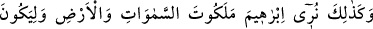

göstererek insanlar arasında yaygın bir şekilde bilindiği gibi Kureyşlilerin putlara
taptığına razı olmamışlardır.
Bu görüşe vereceğimiz cevap şudur: İlk âyet, kendi zürriyyetinden olan çocuklarına
delalet ettiği gibi torunlarına da delalet ettiği kabul edilirse zahiri itibâriyle İbrahim
(a.s.)’ın sulbünden olan çocuklarına da delalet eder.
İkinci âyetin mânâsı şöyledir: Allah Teâlâ kelime-i tevhidi, İbrahim (a.s.)’ın neslinde
ve zürriyetinde bâkî kılmıştır. Ancak ondan sonra devam eden zürriyetinde îman ve
tevhid ehlinden eksik olmaması, ondan sonra gelen bütün torunlarının ve neslinin îman
ettiklerine delalet etmez.
Gönle doğan yorum budur. İşin hakikatını ancak Allah bilir.
“İbrahim, babası Âzer’e “Sen putları” Allah’dan gayrı “tanrılar mı ediniyorsun?”
demişti.” âyeti ile Allah Teâlâ ölüden diri çıkarma kudretini ızhar ediyor.
Kalbi öldüğü için asıl (Âzer), inkâra dalmıştır. Nesil İbrahim (a.s.) ise kalbi diri
olduğu için müşâhedeye garkolmuştur.
Putlar, Allah’dan başka tapınılan her şeydir.
“Doğrusu” Allah bana eşyanın iç âlemini (melekûtunu) gösterdiği için “ben seni ve
kavmini açık bir sapıklık içinde görüyorum.” et-Te’vilatü’n-Necmiyye’de böyle
geçmektedir.
Şu beliğ ifadeler Zemahşerî’nindir: “İki kötü arasından onların yolundan gitmeyen
nice (hayırlı) evlat hasıl olur.
Süt de pislik ile kan arasından çıkar.”
Sa’dî der ki:
Ken’an’ın tabiatı hünersiz olsaydı
Peygamber çocuğu olmak onun değerini artırmazdı
Hüner göster varsa, cevher değil
Çünkü gül dikenden, İbrâhim Âzer’dendir
Sa’dî’nin şöyle bir sözü vardır:
“Kül, her ne kadar ateşin cevherinin yüce olması sebebiyle üstün nesepli ise de,
kendisinin bir hüneri olmaması dolayısıyla toprakla aynıdır. Şekerin kıymeti, özelliğini
taşıdığı kamıştan değildir”.
Burada ortaya çıkan hakikat şudur: Sadece neseb husûsunda değil, her konuda ölüden
diri çıkarmak ve bunun aksi Allah’ın kadîm bir şânıdır. Muvaffakıyet, ancak
Allah’dandır.